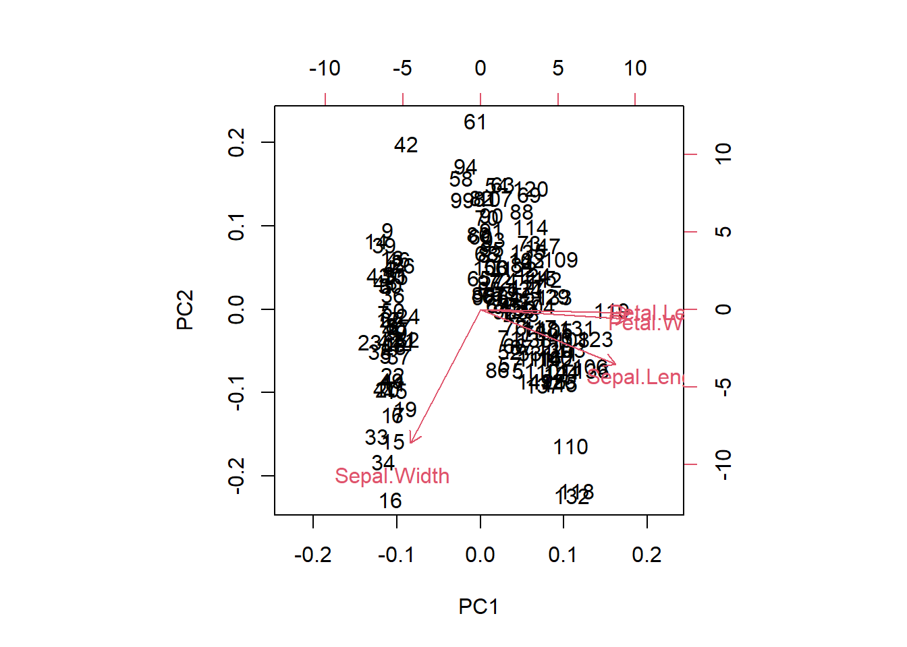

str(iris)
## 'data.frame': 150 obs. of 5 variables:
## $ Sepal.Length: num 5.1 4.9 4.7 4.6 5 5.4 4.6 5 4.4 4.9 ...
## $ Sepal.Width : num 3.5 3 3.2 3.1 3.6 3.9 3.4 3.4 2.9 3.1 ...
## $ Petal.Length: num 1.4 1.4 1.3 1.5 1.4 1.7 1.4 1.5 1.4 1.5 ...
## $ Petal.Width : num 0.2 0.2 0.2 0.2 0.2 0.4 0.3 0.2 0.2 0.1 ...
## $ Species : Factor w/ 3 levels "setosa","versicolor",..: 1 1 1 1 1 1 1 1 1 1 ...
psych::headTail(iris)
## Sepal.Length Sepal.Width Petal.Length Petal.Width Species
## 1 5.1 3.5 1.4 0.2 setosa
## 2 4.9 3 1.4 0.2 setosa
## 3 4.7 3.2 1.3 0.2 setosa
## 4 4.6 3.1 1.5 0.2 setosa
## ... ... ... ... ... <NA>
## 147 6.3 2.5 5 1.9 virginica
## 148 6.5 3 5.2 2 virginica
## 149 6.2 3.4 5.4 2.3 virginica
## 150 5.9 3 5.1 1.8 virginica29 主成分分析
在医学研究中，为了客观、全面地分析问题，常要记录多个观察指标并考虑众多的影响因素，这样的数据虽然可以提供丰富的信息，但同时也使得数据的分析工作更趋复杂化。
例如，在儿童生长发育的评价中，收集到的数据包括每一儿童的身高、体重、胸围、头围、坐高、肺活量等十多个指标。怎样利用这类多指标的数据对每一儿童的生长发育水平作出正确的评价？如果仅用其中任一指标来作评价，其结论显然是片面的，而且不能充分利用已有的数据信息。如果分别利用每一指标进行评价，然后再综合各指标评价的结论，这样做一是可能会出现各指标评价的结论不一致，甚至相互冲突，从而给最后的综合评价带来困难；二是工作量明显增大，不利于进一步的统计分析。
事实上，在实际工作中，所涉及的众多指标之间经常是有相互联系和影响的，从这一点出发，希望通过对原始指标相互关系的研究，找出少数几个综合指标，这些综合指标是原始指标的线性组合，它既保留了原始指标的主要信息，且又互不相关。这样一种从众多原始指标之间相互关系入手，寻找少数综合指标以概括原始指标信息的多元统计方法称为主成分分析（principal components analysis,PCA），又叫主分量分析。
主成分分析在医学统计领域是一种常见的多元统计方法，在机器学习领域是一种常见的数据降维方法，但是在机器学习中它更多的是作为一种预处理步骤。
29.1 加载数据
使用R语言自带的iris鸢尾花数据进行演示。
29.2 相关性检验
在进行PCA之前可以先进行相关性分析，看看相关系数，这样有助于我们查看各个变量之间的相关性，如果各个变量之间的相关性很小，那么这个数据可能不适合做PCA。
cor(iris[,-5])
## Sepal.Length Sepal.Width Petal.Length Petal.Width
## Sepal.Length 1.0000000 -0.1175698 0.8717538 0.8179411
## Sepal.Width -0.1175698 1.0000000 -0.4284401 -0.3661259
## Petal.Length 0.8717538 -0.4284401 1.0000000 0.9628654
## Petal.Width 0.8179411 -0.3661259 0.9628654 1.000000029.3 KMO和Bartlett球形检验
KMO（Kaiser-Meyer-Olkin）检验用于衡量变量之间的偏相关性。其取值范围在0到1之间，若KMO值越接近1，表明变量间的偏相关性越强，意味着原始变量之间存在较多的共同信息，适合进行主成分分析等降维操作；若KMO值接近0，则说明变量间的偏相关性较弱，各变量可能相对独立，不太适合做主成分分析。一般来说，KMO值大于0.6时，进行主成分分析的效果较为理想。
KMO检验可以使用psych实现：
psych::KMO(iris[,-5])
## Kaiser-Meyer-Olkin factor adequacy
## Call: psych::KMO(r = iris[, -5])
## Overall MSA = 0.54
## MSA for each item =
## Sepal.Length Sepal.Width Petal.Length Petal.Width
## 0.58 0.27 0.53 0.63Overall MSA（Measures of Sampling Adequacy）是总体的检验统计量，然后是每个变量的检验统计量。MSA取值范围在0到1之间，越接近1越好。
Bartlett球形检验与KMO检验类似，也是帮助我们确定变量之间是否具有足够的相关性。Bartlett球形检验也可以使用psych实现：
psych::cortest.bartlett(iris[,-5])
## $chisq
## [1] 706.9592
##
## $p.value
## [1] 1.92268e-149
##
## $df
## [1] 6chisq：卡方统计量，其值越大，表明变量间的相关性越强。p.value：p 值，若p值小于设定的显著性水平（通常为0.05），则拒绝原假设，认为变量之间存在显著的相关性，适合进行主成分分析或因子分析等依赖变量相关性的分析方法。
以上两个检验也可以直接用performance包实现：
performance::check_factorstructure(iris[,-5])
## # Is the data suitable for Factor Analysis?
##
##
## - Sphericity: Bartlett's test of sphericity suggests that there is sufficient significant correlation in the data for factor analysis (Chisq(6) = 706.96, p < .001).
## - KMO: The Kaiser, Meyer, Olkin (KMO) overall measure of sampling adequacy suggests that data seems appropriate for factor analysis (KMO = 0.54). The individual KMO scores are: Sepal.Length (0.58), Sepal.Width (0.27*), Petal.Length (0.53), Petal.Width (0.63).29.4 PCA和结果解读
主成分分析可以通过分步计算，主要就是标准化-求相关矩阵-计算特征值和特征向量。R中自带了prcomp()进行主成分分析，这就是工具的魅力，一次完成多步需求。
使用prcomp()进行主成分分析：
# R自带函数
pca.res <- prcomp(iris[,-5], scale. = T, # 标准化
center = T # 中心化
)我们可以通过以下代码单独查看主成分的载荷矩阵，载荷矩阵的每一列对应一个主成分，每一行对应一个原始变量。
# 单独查看主成分的载荷矩阵
pca.res$rotation
## PC1 PC2 PC3 PC4
## Sepal.Length 0.5210659 -0.37741762 0.7195664 0.2612863
## Sepal.Width -0.2693474 -0.92329566 -0.2443818 -0.1235096
## Petal.Length 0.5804131 -0.02449161 -0.1421264 -0.8014492
## Petal.Width 0.5648565 -0.06694199 -0.6342727 0.5235971载荷的绝对值越大，说明该原始变量对相应主成分的贡献越大（主成分载荷通常可以理解为原始变量与主成分之间的相关系数；或者理解为线性回归中的变量系数）。比如对于我们的PC1，它的计算公式如下：
\[ PC1=0.521*Sepal.Length-0.269*Sepal.Width+0.580*Petal.Length+0.565*Petal.Width \]
通过观察主成分载荷矩阵，可以了解每个原始变量对各个主成分的贡献程度。例如，如果某个主成分在多个变量上的载荷绝对值都较大，说明该主成分综合反映了这些变量的信息；如果某个主成分只在一个或少数几个变量上有较大载荷，说明该主成分主要代表了这些变量的信息。
每一列代表一个主成分对应的特征向量，例如，矩阵中第一列表示第一个主成分在各个原始变量上的权重，这些权重构成了第一个主成分的特征向量。
查看特征值：
# 查看特征值
pca.res$sdev^2
## [1] 2.91849782 0.91403047 0.14675688 0.02071484特征值反映了每个主成分所包含的信息量，特征值越大，说明对应的主成分能解释原始数据的方差越多，也就越重要。在选择主成分时，通常会根据特征值的大小，选取特征值大于1或者累积方差贡献率达到一定阈值（如80%或90%）的主成分，以实现数据降维的目的。
查看主成分得分，主成分的得分是将原始数据投影到主成分上得到的值。
# 样本得分score
head(pca.res$x)
## PC1 PC2 PC3 PC4
## [1,] -2.257141 -0.4784238 0.12727962 0.024087508
## [2,] -2.074013 0.6718827 0.23382552 0.102662845
## [3,] -2.356335 0.3407664 -0.04405390 0.028282305
## [4,] -2.291707 0.5953999 -0.09098530 -0.065735340
## [5,] -2.381863 -0.6446757 -0.01568565 -0.035802870
## [6,] -2.068701 -1.4842053 -0.02687825 0.006586116主成分得分可以用于样本的排序和聚类分析。将样本的主成分得分绘制在二维或三维空间中，可以直观地观察样本之间的关系。例如，在主成分得分图中，距离较近的样本可能具有相似的特征。
查看主成分的标准差、方差贡献率、累积方差贡献率：
# 查看标准差、方差贡献率、累积方差贡献率
summary(pca.res)
## Importance of components:
## PC1 PC2 PC3 PC4
## Standard deviation 1.7084 0.9560 0.38309 0.14393
## Proportion of Variance 0.7296 0.2285 0.03669 0.00518
## Cumulative Proportion 0.7296 0.9581 0.99482 1.00000Standard deviation:标准差Proportion of Variance:方差贡献率Cumulative Proportion:累积方差贡献率
方差贡献率反映了每个主成分所包含的信息量。通常我们会选择方差贡献率较大的前几个主成分，这些主成分能够保留原始数据的大部分信息。通过累积方差贡献率，可以确定需要保留的主成分个数。例如，如果前两个主成分的累积方差贡献率达到了85%（该例中前两个主成分的累积方差贡献率为95.81%），那么可以选择保留这两个主成分，将四维数据降维到二维数据进行分析。
29.5 默认的结果可视化
默认的主成分分析结果可视化：
# 双标图
biplot(pca.res)
双标图通常展示前两个主成分（第一主成分和第二主成分），横轴一般是第一主成分，纵轴是第二主成分。主成分是原始变量的线性组合，第一主成分通常解释了数据中最大的方差，第二主成分解释了剩余方差中的最大值，且与第一主成分正交（不相关）。
图中的点代表样本。点在图中的位置反映了样本在主成分空间中的得分。距离较近的点表示这些样本在主成分所代表的特征上具有相似性。例如，在iris数据集的双标图中，如果某些鸢尾花样本点聚集在一起，说明这些鸢尾花在主成分所概括的特征方面比较相似。
样本点在坐标轴上的投影可以近似看作该样本在相应主成分上的得分。沿着第一主成分轴（通常是横轴）方向的位置变化反映了样本在第一主成分上得分的高低，同理，沿着第二主成分轴（通常是纵轴）方向的位置变化反映了样本在第二主成分上得分的高低。
图中的箭头代表原始变量。箭头的方向表示该变量与主成分之间的相关性方向。如果箭头与某个主成分轴的夹角较小，说明该变量与这个主成分的相关性较强。例如，若一个变量的箭头几乎与第一主成分轴平行，那么这个变量在第一主成分上的载荷较大，对第一主成分的贡献也较大。
箭头的长度表示该变量对主成分的重要性。箭头越长，说明该变量对主成分的影响越大。
通过箭头之间的夹角可以判断变量之间的相关性。夹角较小的箭头表示对应的变量之间正相关；夹角接近180度的箭头表示对应的变量之间负相关；夹角接近90度的箭头表示对应的变量之间相关性较弱。
29.6 确定最佳主成分个数
碎石图可以帮助确认最佳的主成分个数，可以使用默认的screeplot()实现：
# 默认是条形图，我们改为折线图，其实就是方差贡献度的可视化
screeplot(pca.res, type = "lines")
一般来说，主成分的保留个数可以按照以下原则确定： 1. 以累积贡献率确定，当前K个主成分的累积贡献率达到某一特定值（一般选70%或者80%、90%都行）时，则保留前K个主成分； 2. 以特征值大小来确定：如果主成分的特征值大于1，就保留这个主成分。
从上图可以看到用2-3个主成分就挺好了。但是保留几个主成分并没有绝对的标准，大家根据自己的实际情况来！
这里再给大家介绍一个非常实用的函数，使用parameters包实现，可以给出好多种方法的选择：
n <- parameters::n_components(iris[,-5])
n
## # Method Agreement Procedure:
##
## The choice of 1 dimensions is supported by 6 (46.15%) methods out of 13 (Bentler, Optimal coordinates, Acceleration factor, Parallel analysis, Kaiser criterion, Velicer's MAP).6个方法都支持选择1个主成分，如果要想查看所有的方法及每个方法选择的主成分个数,可以直接变为数据框查看:
as.data.frame(n) # 一共有12个方法!（选0个因子的不算）
## n_Factors Method Family
## 1 0 Scree (R2) Scree_SE
## 2 1 Bentler Bentler
## 3 1 Optimal coordinates Scree
## 4 1 Acceleration factor Scree
## 5 1 Parallel analysis Scree
## 6 1 Kaiser criterion Scree
## 7 1 Velicer's MAP Velicers_MAP
## 8 2 Scree (SE) Scree_SE
## 9 2 VSS complexity 1 VSS
## 10 2 VSS complexity 2 VSS
## 11 3 Bartlett Barlett
## 12 3 Anderson Barlett
## 13 3 Lawley Barlett或者也可以查看这十几种结果的汇总表:
summary(n)
## n_Factors n_Methods Variance_Cumulative
## 1 1 6 0.7213402
## 2 2 3 0.8667486
## 3 3 3 0.8912973当然也可以把结果画出来的,借助see这个包即可:
library(see)
plot(n)+theme_modern()
横坐标是选择的主成分数量,左侧纵坐标是方法的数量（百分比）,右侧纵坐标是解释的方差百分比。先看条形图，选择1个主成分的方法最多，占了12个方法的约50%以上；再看折线图，选择主成分越多，解释的方差百分比越多，不过超过2之后就变化不大了。（这个例子变量太少了）